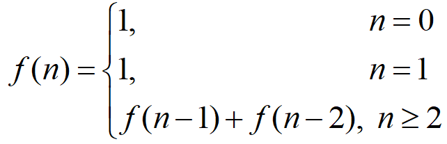
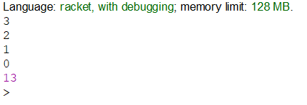

Вибір середовища
Racket — це універсальна багатопарадигмальна мова програмування та мультиплатформенний дистрибутив, який включає мову Racket, компілятор, велику стандартну бібліотеку, IDE, засоби розробки та набір додаткових мов. Мова Racket є сучасним діалектом Lisp і нащадком Scheme. Він створений як платформа для проектування та впровадження мови програмування. На додаток до основної мови Racket, Racket також використовується для позначення сімейства мов програмування та набору інструментів, що підтримують розробку на Racket і з ним. Racket також використовується для створення сценаріїв, навчання інформатиці та досліджень. Racket призначений для розробки програм та мов програмування. Це означає, що з його допомогою можна досліджувати не лише те, як писати програми, а й чому саме так.
Задача 1
Послідовність 1, 1, 2, 3, 5, 8, ... складається з чисел Фібоначчі. Кожен елемент, починаючи з третього, дорівнює сумі двох попередніх. Рекурентне співвідношення для розрахунку чисел Фібоначчі таке:
Ввести з клавіатури два натуральних числа m та n, які означають кількість чисел та номер числа в послідовності Фібоначчі. Вивести послідовність чисел Фібоначчі в кількості m елементів та значення n-го числа. Передбачити випадок m < n. Визначити глибину рекурсії.
Код програми
#lang racket
(define (fibonacci m n)
(if (< m n)(error "\nn is out of range")
(fib m n 1 0 0)))
(define (fib m n j k d)
(display j)
(cond
((= m 1) (display "\nthe depth is ") (display d)
(display "\nthe n-th value is ") (display n))
(else (cond ((= n (+ d 1)) (set! n j)))
(fib (- m 1) n (+ j k) j (+ d 1)))))
(define m (string->number(read-line (current-input-port) 'any)))
(define n (string->number(read-line (current-input-port) 'any)))
(fibonacci m n)
Результати роботи програми
Скрін-шот результату
Скрін-шот результату
При заданих вхідних 5 (кількість елементів) і 3 (значення під цим індексом будемо виводити далі) отримані результати: числа Фібоначчі: 1 1 2 3 5, глибина рекурсії - 4 та елемент під номером 3 - 2. Перевірка через калькулятор показала, що ця відповідь є коректною.
source file link
Задача 2
Створити рекурсивну функцію, яка отримує числа, зчитуючи їх з клавіатури, і перевіряє їх на непарність. Кінець вводу - число 0. Функція не повертає значення, а відразу ж виводить результат на екран, зберігаючи порядок ведених чисел. У цьому завданні не можна використовувати глобальні змінні і передавати будь-які аргументи в рекурсивну функцію. Основна програма повинна складатися тільки з виклику цієї функції. Контрольний тест: введені числа 3 2 1 0, отриманий результат: 3 1.
Код програми
#lang racket
(define (nums)
(define n (string->number(read-line (current-input-port) 'any)))
(cond
((= n 0) n)
(else (cond ((even? (nums)) (display n)))
n)
))
(nums)
Результати роботи програми
При заданій послідовності чисел виводяться всі непарні числа.
source file link
Висновок
Після проведеної роботи було реалізовано дві програми з використанням рекурсій. Перша програма, для розрахунку чисел Фібоначчі, виявилася легшою. Найбільшою складністю було розібратись з новим та незнайомим синтаксисом нової для мене мови програмування. Найбільшою складністю було дійти до найпростішого рішення другої програми.